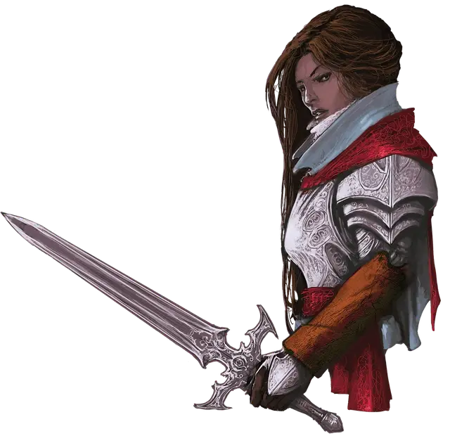

Ирина Коляна
Ireena Kolyana
Средний Гуманоид (Человек), законно-добрый, именной НИП

Класс Доспеха 15 (кираса)
Хиты 14 (2к8 + 5)
Скорость 30 футов
| мод | спас | ||
|---|---|---|---|
| СИЛ | 11 | +0 | +0 |
| ЛОВ | 12 | +1 | +1 |
| ТЕЛ | 11 | +0 | +0 |
| мод | спас | ||
|---|---|---|---|
| ИНТ | 12 | +1 | +1 |
| МДР | 14 | +2 | +2 |
| ХАР | 16 | +3 | +3 |
Навыки Обман +5, Проницательность +4, Убеждение +5
Чувства пассивное Восприятие 12
Языки Два любых языка.
Опасность 1/8 (25 опыта)
Бонус мастерства +2
Действия
Рапира. Рукопашная атака оружием: +3 к попаданию, досягаемость 5 футов, одна цель. Попадание: Колющий урон 5 (1к8 + 1).
Реакции
Парирование. Ирина добавляет 2 к КД против одной рукопашной атаки, которая должна попасть по нему. Для этого Ирина должна видеть атакующего, и должна использовать рукопашное оружие.
Описание
Ирина, поразительная молодая девушка с тёмно-рыжими волосами, была уже дважды укушена Страдом.
Деревенские жители боятся и избегают её. Персонажи являются последней надеждой Ирины на защиту, потому она готова следовать за ними при определённых условиях. Хотя она кажется кроткой, она обладает крепкой волей и помогает группе всем, чем может для собственного спасения. Она не помнит своего далёкого прошлого. Она не помнит, как она попала в Баровию или откуда. Более того, её столкновения со Страдом оставили лишь смутные воспоминания, благодаря его вампирским чарам, но она может чётко вспомнить пылающую жажду в его глазах.
Она говорит персонажам, что волки и прочие ужасные создания неделями ломились в дом ночь за ночью.
Сердце бургомистра не смогло выдержать постоянной осады, и он умер три дня назад. Странным образом, после его смерти на дом больше не нападали.
Он говорит, что никто из деревни не решается помочь им с Исмарком должным образом похоронить Коляна Индировича на кладбище. Ирина просит персонажей помочь Исмарку безопасно доставить тело её отца Донавичу, местному священнику (область Е5). Она отказывается отправляться в Валлаки или куда-либо ещё, пока тело бургомистра лежит на полу особняка.